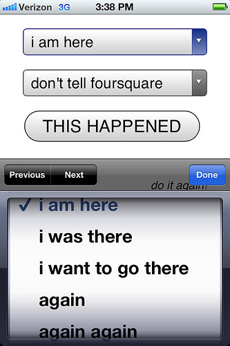
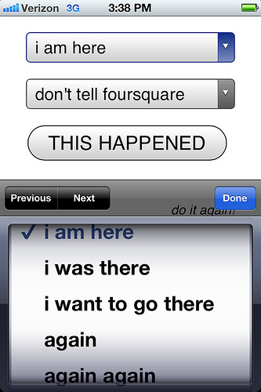

privatesquare is a simple web application to record and manage a private database of foursquare check-ins.
 

It uses the foursquare API as a single-sign-on provider, for user accounts, and to query for nearby locations (using your web browser's built-in geolocation support).
Check-ins can be sent on to foursquare (and again re-broadcast to Twitter, etc. or to your followers or just "off the grid") but the important part is: They don't have to be.
parallel-dopplr), April 2014
You can download this project in either zip or tar formats.
You can also clone the project with Git by running:
$ git clone git://github.com/straup/privatesquare